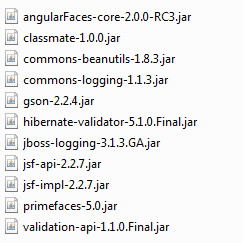

Getting started
The most simple way to use AngularFaces is to simply include the jar file in your project. Sometimes this is all you need to do: for instance, the automatic creation of labels and messages works without further configuration.
Brief introduction for the experts
Maven and Gradle users might want to "git clone" the AngularFaces 2.0 core project and run "maven install". After that, AngularFaces 2.0 can be used in your pom.xml like this:
Verbose explanation for the rest of us
I've prepared a couple of tutorial projects for you. The first tutorial project doesn't do much: it's simply there to lay the ground to build on later.You find the first tutorial project at my GitHub repository. I suggest you download the entire GitHub repository. Currently, AngularFaces hasn't made it to Maven Central yet. Until it does, building it from source is the best approach. It's a fairly simple approach, by the way.
Downloading AngularFaces with Git
If you're already using Git, clone the repository to your local hard disk. If you want to clone it to C:\AngularFaces, proceed as follows. Open the command shell. In the case of Windows, you do it by hitting the keys "Windows" and "R" simulaniously, typing "CMD" and hitting the "return" key. Now a black window (the "command shell") opens. As for Unix users - well, I suppose everyone of you is more familiar with the shell than I am, so I'll omit the description. Now that the shell is open, enter these commands:Again, this are slightly different in the UNIX world. You'll have to chose a different path, and of course there's no C: drive. I'll stick with the Windows version for the rest of the tutorial.
Downloading AngularFaces using Subversion
You can also download AngularFaces using Subversion. The corresponding URL is https://github.com/stephanrauh/AngularFaces.Downloading AngularFaces as a ZIP file
Of course, you can also download the ZIP file from GitHub. The disadvantage is it's more difficult to update your project. If you don't mind, download the master zip file from GitHub. There's also a "Download Zip" button at https://github.com/stephanrauh/AngularFaces.Compile the projects using Maven
The next step is to import the projects into your IDE. Alternatively, you can compile the projects from the command line using Maven.Eclipse users click "Import... --> Existing Maven Projects" and select these two projects:

The next step is to set up an Apache Tomcat server and to deploy the AngularFaces tutorial project to it. After starting Tomcat open the URL http://127.0.0.1:8080/angularfaces-tutorial-step-00/index.jsf. As mentioned above, the first tutorial page isn't really exciting: just a few texts and an image. I reduced the first example as much as possible because its only purpose is to check the installation.
Project setup
This isn't as trivial as it sounds. The default project setup includes AngularFaces to your libraries - and that means AngularFaces starts up and tries to improve your JSF files. The first tutorial is designed in a way that AngularFaces can't improve anything, but you should find a few messages in the console window (or the catalina.out file).The folder angularfaces-tutorial-step-00//WEB-INF/lib of the Tomcat webapps folder should contain these libraries:

AngularFaces doesn't really require PrimeFaces, but it's in the folder because AngularFaces supports PrimeFaces. Gson, classmate, commons-beanutils, commons-logging and the two validation API jars are added by AngularFaces 2.0 core.